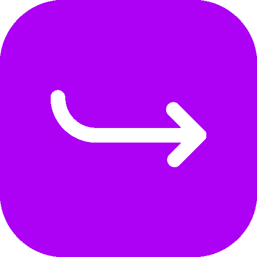
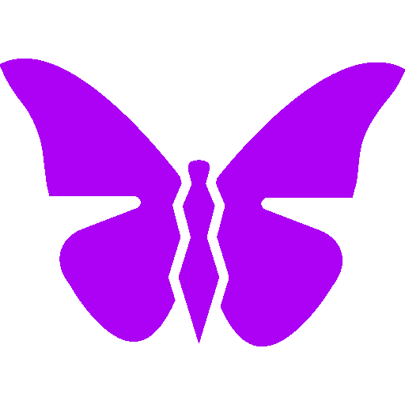
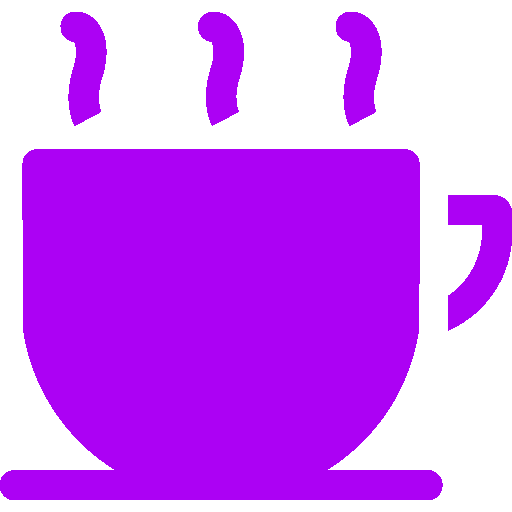
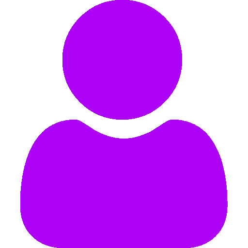

⟿ Personagens Principais ⬳
Subaru Natsuki
Um jovem comum que foi invocado para outro mundo.
Emilia
Meia-elfa e uma das candidatas ao trono real
Rem
Uma maid gentil e leal que faz de tudo por quem ama.
Beatrice
Uma espirito artificial com uma personalidade fechada.
⟿ Temporadas ⬳
| Temporada | Ano | Episódios |
|---|---|---|
| Temporada 1 | 2016 | 25 |
| Temporada 2 | 2020 | 25 |
| Temporada 3 | 2024 | 16 |
⟿ Curiosidades ⬳

"retorno pela Morte" e a habilidade unica de Subaru.

O anime possui varias linhas do tempo.

A historia foi inspirada em um web novel

Re:Zero e famoso por seu desenvolvimento de personagens.
E considerado um dos melhores animes isekai.